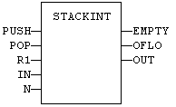
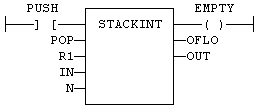

Function Block
Manages a stack of DINT integers.
|
Name |
Type |
Description |
|
PUSH |
BOOL |
Command: when changing from FALSE to TRUE, the value of IN is pushed on the stack. |
|
POP |
BOOL |
Pop command: when changing from FALSE to TRUE, deletes the top of the stack. |
|
R1 |
BOOL |
Reset command: if TRUE, the stack is emptied and its size is set to N. |
|
IN |
DINT |
Value to be pushed on a rising pulse of PUSH. |
|
N |
DINT |
Maximum stack size - cannot exceed 128. |
|
Name |
Type |
Description |
|
EMPTY |
BOOL |
TRUE if the stack is empty. |
|
OFLO |
BOOL |
TRUE if the stack is full. |
|
OUT |
DINT |
Value at the top of the stack. |
Push and pop operations are performed on rising pulse of PUSH and POP inputs. In LD language, the input rung is the PUSH command. The output rung is the EMPTY output.
The specified size (N) is used only when the R1 (reset) input is TRUE.
MyStack is a declared instance of STACKINT function block.
MyStack (PUSH, POP, R1, IN, N);
EMPTY := MyStack.EMPTY;
OFLO := MyStack.OFLO;
OUT := MyStack.OUT;


MyStack is a declared instance of STACKINT function block.
Op1: CAL MyStack (PUSH, POP, R1, IN, N)
LD MyStack.EMPTY
ST EMPTY
LD MyStack.OFLO
ST OFLO
LD MyStack.OUT
ST OUT